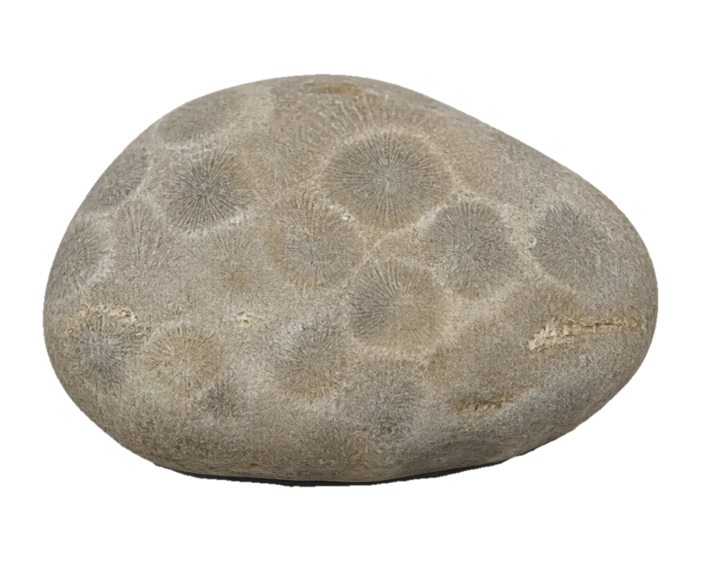
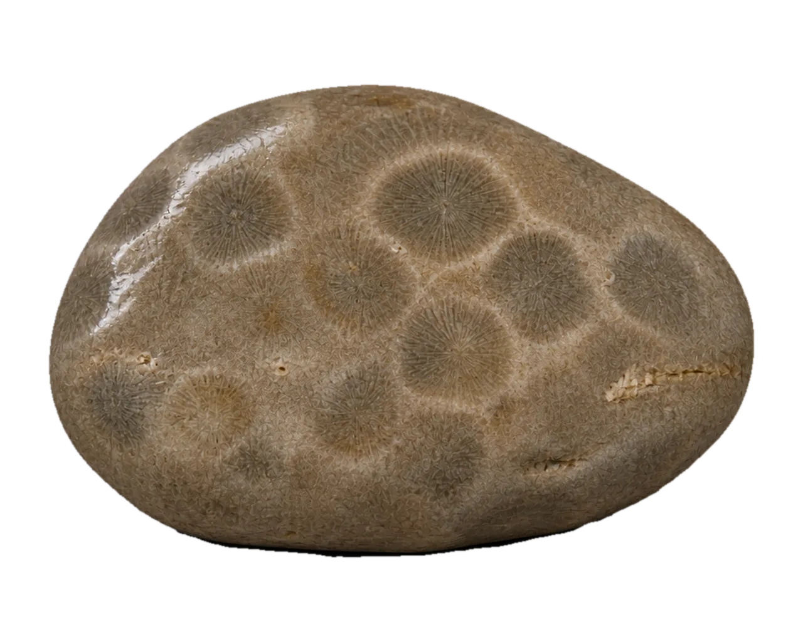
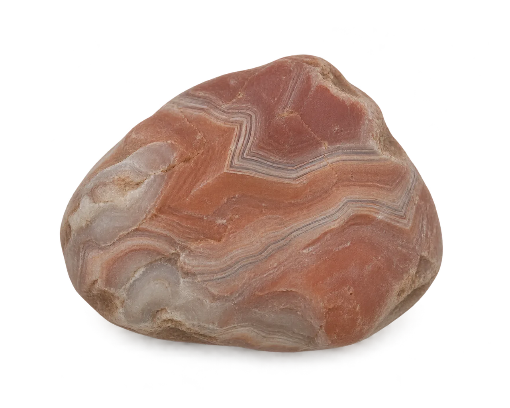
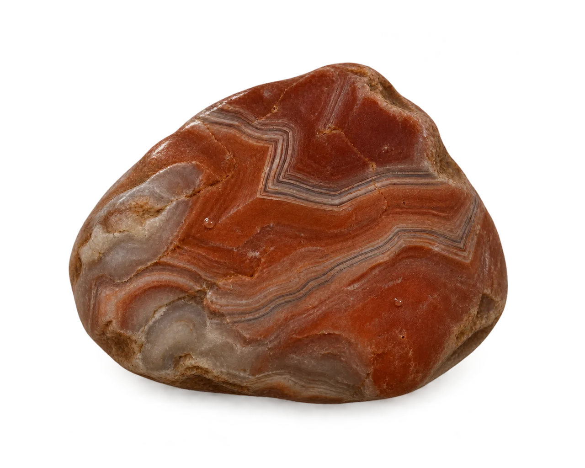
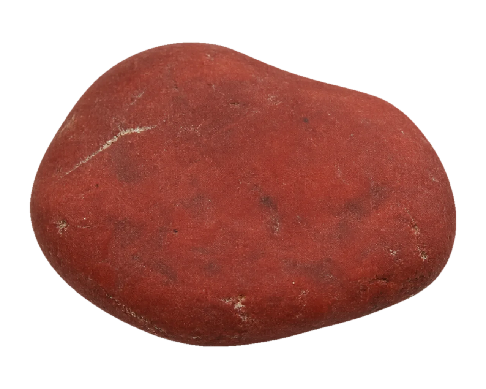
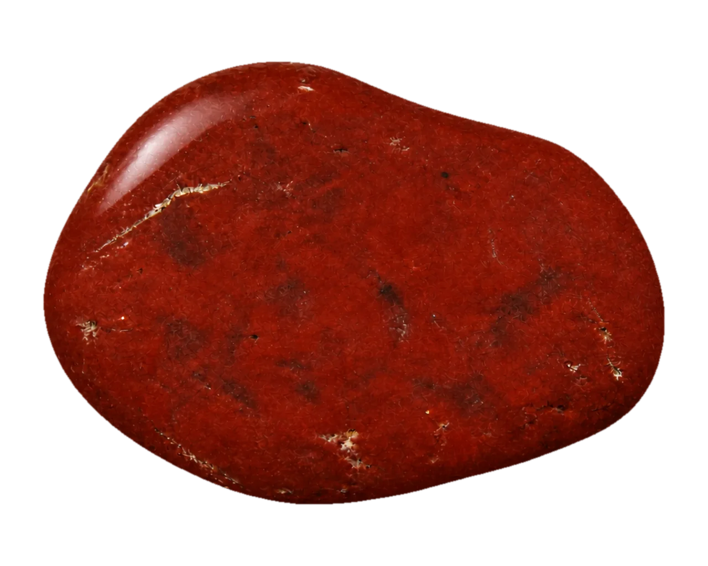
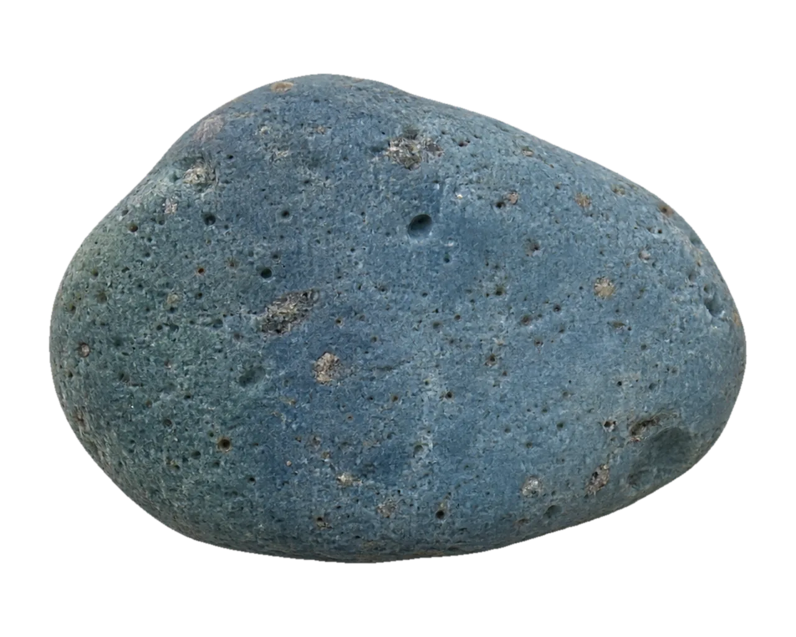
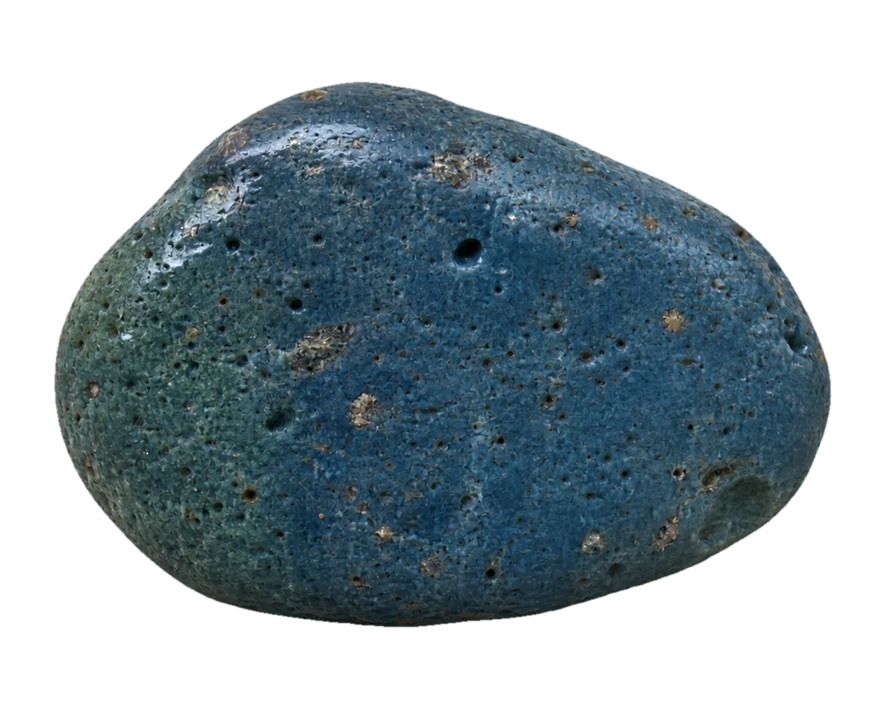

Rub the stone. Water shows its real color right where you touched it. Then it dries, and the stone lies again.
The stone
specimen_01petoskey


DryRub to wetBrush across to wet
Dry.
Petoskey stone
Dry
A plain gray or tan limestone pebble, maybe faintly mottled.
Wet
Tightly packed cells show up, each with a dark eye and thin lines radiating out.
Field note
A fossil coral colony from a Devonian sea. Michigan's state stone since 1965.
AI sample image, not a real find. A photo of one of Brian's own stones will replace it.
specimen_02agate


DryRub to wetBrush across to wet
Dry.
Lake Superior agate
Dry
A dull, waxy, often pitted red-brown pebble that hides in plain sight.
Wet
Glossy and a little see-through at the edges, sometimes with thin bands on a broken face.
Field note
Hold a wet one up to the sun and a little light gets through. Minnesota's state gemstone.
AI sample image, not a real find. A photo of one of Brian's own stones will replace it.
specimen_03jasper


DryRub to wetBrush across to wet
Dry.
Red jasper
Dry
A dull brick-red pebble, sometimes with a thin pale vein.
Wet
A deeper, glossier red, but still opaque: no light passes through, and no bands.
Field note
A classic agate lookalike. If daylight will not pass through the edges, it is not an agate.
AI sample image, not a real find. A photo of one of Brian's own stones will replace it.
specimen_04leland_blue


DryRub to wetBrush across to wet
Dry.
Leland Blue
Dry
A dull blue-gray lump.
Wet
Strong blues, grays, and greens, with gas bubbles of mixed sizes.
Field note
Not a natural stone: it is slag from a 19th-century iron furnace in Leland, Michigan.
AI sample image, not a real find. A photo of one of Brian's own stones will replace it.
Try it on your phone
Tap the stone once. It leaves a wet fingerprint.
Rub the stone side to side. A wet streak follows your finger.
Swipe up or down across the stone. The page should scroll, the same as anywhere else.
Wait. After a few seconds the water dries from its edges, and the stone goes dull again.
Press Dunk it. Water climbs the whole stone and stays until you press Dry it off.
The five rules
Never invent pixels. You only ever see the approved dry picture, the approved wet picture, or a blend of the two. No added shine, glow, or droplets.
Water arrives fast and leaves slow.
Two worlds, two ways of moving. Pixel things move in steps. Stones, water, and paper move smoothly.
You cause it. Nothing moves to grab your attention.
Every effect has a still version for people who turn motion off.
What is real here
This is a private proof of concept. It is not the store, and nothing here is live.
The four stones are AI sample images, the same matched pairs already approved in the storefront preview. The stone notes are drafts, fact-checked once on Nov 4, 2026.
The readout shows how hard your phone is working while the stone is wet.